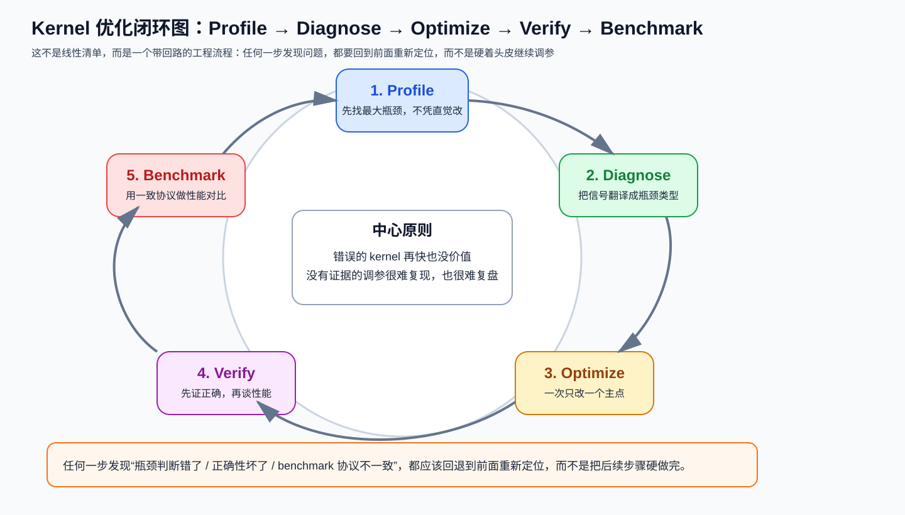

第五章：系统技能——把优化变成可重复的工作流¶
学习目标：不再靠“感觉优化”，而是学会用 Profile → Diagnose → Optimize → Verify → Benchmark 的闭环稳定推进。
本章技能卡¶
| 项目 | 内容 |
|---|---|
| 关注对象 | Profiling / Diagnosis / Verification / Benchmark / Optimize Loop |
| 核心问题 | 如何把零散技巧变成一个能复用、能复盘的优化流程 |
| 最适合阅读时机 | 你已经能看懂前 4 章内容，准备真正做优化迭代 |
| 读完应能回答 | 为什么不能凭直觉改；为什么 verify 和 benchmark 不能颠倒 |
| 最重要产出 | 形成“一次只改一个主点”的工程化闭环习惯 |
配套导航：如果你想先看整套教程如何串起来，再回到本章，请看 学习路径-总目录。
配套资料： - 最小可运行模板集：模板 5（Verify + Benchmark Harness） - 术语表与通用坑清单
1. 为什么系统技能比单个 trick 更重要¶
很多人学 kernel 优化时，会记住大量局部技巧：
BLOCK_K怎么调；- 哪个算子适合 fusion；
- 哪个平台喜欢什么 tile。
但真正决定你能不能持续做对优化的，不是记住多少技巧，而是：
你有没有一套稳定的工作流，能把“猜测”变成“证据驱动的迭代”。
本章把这套工作流拆成五步：
- Profiling
- Diagnosis
- Verification
- Benchmark
- Optimize Loop
先看一张总图：

这张图最重要的不是顺序本身，而是它强调了一件事：
这是一个会回退、会重来的闭环，不是从上到下打卡一次就结束的流水线。
比如：
- 你 benchmark 后发现速度提升不稳定，可能要回到 profile；
- 你 verify 后发现边界错了，必须回到 optimize 修实现；
- 你 diagnose 后发现自己根本分错了瓶颈类型，就应该回退重看 profile。
2. Profiling：先找真正的主瓶颈¶
2.1 不要凭直觉优化¶
最常见的错误流程是：
问题在于：
- 你盯的未必是真正瓶颈；
- 某段“看起来复杂”的代码可能只占总时长 2%；
- 一次改很多地方，最后也不知道是谁起作用。
更好的流程必须先回答：
所以 profiling 的产出不是“一堆图表”，而是一个非常具体的问题定义：
2.2 NVIDIA 常用工具：Nsight Compute / Nsight Systems¶
Nsight Compute（NCU）¶
用途：
- 看单个 kernel 的计数器；
- 判断 DRAM、SM、L2、bank conflict、occupancy 等问题。
Nsight Systems（NSYS）¶
用途：
- 看系统级时间线；
- 判断 launch overhead、CPU-GPU 空洞、多个 kernel 的相对占比。
一个很实用的原则是：
先用 NSYS 看“大头在哪”，再用 NCU 深挖“这个大头内部为什么慢”。
2.3 AMD 常用工具：rocprof / Omniperf¶
对应地，在 ROCm 平台上你通常会看：
rocprof：拿硬件计数器；- Omniperf：更系统地做指标分析。
虽然工具名不同，但底层问题仍然是同样三个：
- 计算单元忙不忙；
- 内存带宽吃没吃满；
- 有没有资源/调度/冲突导致低效。
2.4 应该优先看哪些指标¶
不需要一上来盯上百个指标。先看这些就够建立第一层判断：
| 维度 | 你关心什么 |
|---|---|
| 计算利用率 | SM/CU 是否忙 |
| 内存利用率 | DRAM/HBM 是否接近饱和 |
| 活跃度 | occupancy / active warps / active waves |
| 缓存/共享存储 | L2 命中情况、bank conflict 风险 |
| 系统层面 | kernel 数量、单次时长、launch 空洞 |
关键不是记住每个指标名，而是学会把它们翻译成一句话：
2.5 Roofline：一个足够好用的上层框架¶
你可以把 roofline 当成一个很粗但很有用的判断器：
如果算子 intensity 很低，它通常更接近 memory-bound； 如果很高，它更可能是 compute-bound。
注意这里是“更可能”，不是绝对判决。因为现实里还可能夹杂：
- launch overhead；
- bank conflict；
- occupancy 限制；
- 不规则 shape 导致的低效。
所以 roofline 最适合做 第一层归类，不是最终结论。
3. Diagnosis：把 profile 结果翻译成优化优先级¶
3.1 三类常见瓶颈¶
1) Memory-bound¶
常见表现：
- DRAM/HBM 利用率高；
- 计算利用率不高；
- 算子 arithmetic intensity 低；
- 很多时间花在 load/store 路径。
优先策略通常是：
- fusion；
- 向量化加载；
- locality / L2 grouping；
- 改善 reduce 和边界处理；
- 必要时量化权重/激活。
2) Compute-bound¶
常见表现：
- 计算利用率高；
- DRAM 没有完全吃满；
- Tensor Core / MFMA 路径是核心关注点；
- 内层循环质量很重要。
优先策略通常是：
- 正确 tile 形状；
- Tensor Core / MFMA 友好布局；
- inner-loop hygiene；
- 合适的
num_warps/num_stages； - 必要时再考虑 fast math。
3) Latency-bound¶
常见表现：
- 计算与带宽利用率都不高；
- kernel 很短、很多；
- launch overhead 明显；
- 或者 grid 太小，GPU 根本铺不满。
优先策略通常是：
- 减少 kernel 数量；
- persistent kernel；
- Split-K / Stream-K；
- 调整并行粒度。
3.2 一个简单够用的诊断流程¶
先看系统时间线：大头 kernel 是谁？
↓
看该 kernel：DRAM 高不高？SM/CU 高不高？
↓
若 DRAM 高、算力低 -> Memory-bound
若算力高、DRAM 一般 -> Compute-bound
若两边都不高 -> Latency-bound / 负载不足 / 调度问题
这套流程故意不追求精细，因为教学里最需要的是 先把主矛盾抓准。
3.3 不要直接从指标跳到具体参数¶
例如：
这不是稳健诊断。
更稳健的思路是：
指标只是信号，根因才决定优化动作。
4. Verification：错误的 kernel 再快也没价值¶
4.1 建议采用的五阶段验证协议¶
这一节和整章总图要一起看。闭环里最常见的工程错误不是“完全不做 verify”，而是：
正确的次序应该是：
Stage 1：Basic correctness¶
先和可靠参考实现对齐：
- PyTorch reference；
- 或者 vendor library；
- 或者你确认正确的慢实现。
Stage 2：Dtype sensitivity¶
同一 kernel 在：
- FP16
- BF16
- FP32
下的误差行为可能完全不同。很多 bug 只在某个 dtype 才暴露。
Stage 3：Edge cases¶
要主动测：
- 非整除维度；
- 极小尺寸（如
M=1）； - 很大尺寸；
- 特殊值（全 0、大值、负值、inf/nan 视场景而定）。
Stage 4：Determinism / reproducibility¶
这里一定要讲得克制：
不是所有 GPU kernel 都需要 bitwise identical。
更合理的表达是：
- 如果这个 kernel 设计上应该 deterministic，那就检查重复运行结果是否一致；
- 如果算法本身允许非确定性（例如某些 atomic / reduction 路径），则应该检查 统计稳定性或误差范围，而不是强行
torch.equal。
Stage 5：Stress test¶
长时间、大尺寸、多次调用，看是否有：
- 罕见 race；
- 数值漂移；
- 内存问题；
- 在特定 shape 才爆的 bug。
4.2 容差不应教条化¶
常见经验值可以作为起点，但不要把它写成铁律：
| dtype | 常见起始容差 |
|---|---|
| FP32 | 1e-5 量级 |
| FP16 | 1e-2 量级 |
| BF16 | 1e-1 量级 |
为什么要说“起始容差”？因为误差和下面因素都有关：
- 算子类型；
- reduce 长度；
- 是否用了 fast math；
- 是否改了规约顺序；
- 是否存在 chunked/online 近似结构。
所以更正确的验证语言应该是：
4.3 一个统一验证模板¶
def verify_kernel(kernel_fn, ref_fn, cases, atol, rtol):
for case in cases:
out = kernel_fn(*case)
ref = ref_fn(*case)
assert torch.allclose(out.float(), ref.float(), atol=atol, rtol=rtol)
真正需要补的不是模板本身，而是测试集设计：
- 标准 shape；
- 边界 shape；
- 多 dtype；
- 重复执行。
5. Benchmark：测得稳，比测得花更重要¶
5.1 Benchmark 的最小规范¶
一个靠谱的 benchmark 至少要包含：
- warmup；
- 真正同步的计时；
- 多次迭代；
- 报告中位数或稳定统计量；
- 明确 shape、dtype、设备。
5.2 为什么要 warmup¶
warmup 不是形式主义，它在 GPU kernel 里很重要，因为前几次运行经常混着：
- JIT 编译；
- autotune 搜索；
- 频率爬升；
- cache 预热。
把这些时间混进 benchmark 会严重污染结果。
5.3 计时最好用 GPU 事件，而不是只看主机时间¶
在 CUDA/ROCm 语义下，更稳妥的做法通常是用设备事件计时，而不是裸 time.perf_counter()。
原因是：
- GPU 调用很多是异步的；
- 主机计时若不同步，容易量错；
- 事件计时更贴近设备执行时间。
5.4 Compute-bound 与 memory-bound 的指标不一样¶
Compute-bound 关心 TFLOPS¶
例如 GEMM：
Memory-bound 关心 GB/s¶
例如 Softmax / RMSNorm：
别把两种指标混着看。一个 Softmax 不该用 TFLOPS 当主 KPI，一个 GEMM 也不该只盯 GB/s。
5.5 Benchmark 结果至少要记录这些字段¶
| 字段 | 说明 |
|---|---|
| 算子名 | GEMM / Softmax / RMSNorm ... |
| shape | 输入维度 |
| dtype | FP16 / BF16 / FP32 |
| device | 4090 / H100 / MI300X ... |
| latency | 中位数或稳定统计 |
| throughput | TFLOPS 或 GB/s |
| baseline | vs PyTorch / cuBLAS / CK / 自家旧版本 |
这样结果才可复现、可比较、可复盘。
6. Optimize Loop：每轮只改一个主点¶
6.1 推荐的闭环¶
Baseline
-> Profile
-> Diagnose
-> Apply one change
-> Verify
-> Benchmark
-> Keep or revert
-> Next iteration
最重要的不是这个图，而是下面几条 guardrail。
6.2 六条黄金规则¶
规则 1：一次只改一个主变量¶
不要一轮里同时改：
BLOCK_Knum_warpsnum_stages- 还顺手把布局也改了
否则即使性能变了，你也不知道是哪一项起作用。
规则 2：先 verify，再 benchmark¶
错的更快没有意义。
规则 3：回退不是失败，是管理复杂度¶
如果某次修改回退了，应该明确记录：
- 为什么试；
- 为什么退；
- 下一步准备怎么试。
规则 4：平台差异要单独记¶
一个改动在 4090 上提速，不代表在 MI300X 或 H100 上也提速。不要混写成统一结论。
规则 5：为每次迭代留日志¶
最简单也最有用的日志字段：
- 改了什么；
- 正确性是否通过；
- 性能变化多少；
- 保留还是回退。
规则 6：连续几轮无明显收益后，要怀疑“方向错了”¶
如果你已经做了多轮小调参仍没显著提升，问题可能不在参数，而在：
- 算法组织方式；
- kernel 粒度；
- 甚至上游/下游调用模式。
这时候比继续抠参数更重要的是重新诊断。
7. 一个完整案例：如何优化一个慢 Softmax¶
假设现状：
- 4090 上一版 Softmax 只有预期带宽的一半；
- PyTorch eager 版本更慢，但你自己的 Triton 版本也不够好。
第 0 轮：建立 baseline¶
记录：
- shape；
- dtype；
- latency；
- GB/s；
- 和 PyTorch baseline 对比。
第 1 轮：Profile¶
看出：
- DRAM 利用率偏高；
- 计算利用率不高；
- 说明是 memory-bound；
- 同时检查是否有边界导致的低效访问。
第 2 轮：Diagnose¶
决定优先尝试：
- 向量化加载；
- 合理
BLOCK_SIZE； - multi-row 处理。
第 3 轮：每次只改一个点¶
例如先只改 BLOCK_SIZE，验证和 benchmark；
再只加向量化加载；
再只尝试 multi-row。
第 4 轮：记录保留/回退¶
如果 multi-row=8 导致寄存器压力过大，回退； 如果 multi-row=4 提升明显，就保留。
这就是一个完整、可复盘的优化循环。
8. 本章图解回顾¶
第五章最值得反复回看的核心图，其实就是开头那张闭环图：Kernel 优化闭环图
读完这一章后，你最好已经能把这张图翻译成下面这组工程动作：
- Profile：先找到真正值得优化的大头；
- Diagnose：把指标翻译成 compute / memory / latency 类型；
- Optimize：每轮只改一个主变量；
- Verify：先过正确性和边界；
- Benchmark：最后再用统一协议测性能；
- Loop back：任何一步发现假设错了，都可以回退重做。
如果你想离线快速复习整套教程的图谱，而不是只看这一章，也可以直接翻：
9. 本章自测¶
问题 1¶
为什么说 NSYS 和 NCU（或 ROCm 对应工具）经常要配合使用，而不是只用一个？
问题 2¶
为什么 occupancy 低 不能直接推出“把 num_warps 调大”？
问题 3¶
为什么验证里不应该把“重复运行 bitwise identical”当成所有 kernel 的默认标准？
问题 4¶
一个 memory-bound 算子的主 KPI 应该更接近 TFLOPS 还是 GB/s？为什么？
10. 本章答案¶
答案 1¶
因为 NSYS 更擅长看系统级时间线和大头位置，NCU/rocprof 更擅长深挖单个 kernel 内部的硬件计数器。两者解决的问题层级不同。
答案 2¶
因为 occupancy 低可能来自很多原因：grid 小、寄存器太重、SMEM 太大、block 形状不合理。根因不一样，优化动作也不一样。
答案 3¶
因为有些 GPU kernel 天然允许非确定性（如部分 reduction/atomic 路径）。这时更合理的是检查误差范围或统计稳定性，而不是强行要求 bitwise 完全一致。
答案 4¶
更接近 GB/s，因为它的主限制来自数据搬运而不是算术吞吐。
11. 本章小结¶
系统技能真正要你养成的是一种工作方式：
- 先定位瓶颈，再谈优化动作；
- 先保证正确，再谈速度；
- 每轮只改一个主变量，并留下日志；
- 把平台差异、算子类型和验证标准一起纳入闭环。
学完整套教程后，你应该能做到¶
- 拿到一个 kernel 先做 profile，而不是先改代码；
- 根据指标判断该优先动 Tier 1/2/3/4/5 中的哪一层；
- 为每次优化保留可验证、可 benchmark、可回滚的记录；
- 对“快但不稳”与“稳但慢”的取舍给出有依据的判断。
到这里，这套教程的主线才算闭合：
- 第一章：执行模型 + 分块 + 内存层级；
- 第二章：计算优化 + 融合 + 高级调度；
- 第三章：架构特定能力；
- 第四章：具体算子分析；
- 第五章：把所有知识串成可执行优化流程。